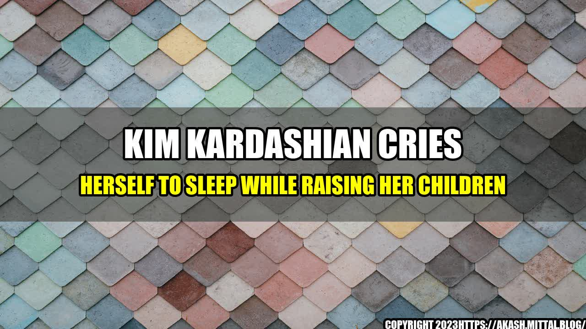

Kim Kardashian Cries Herself to Sleep While Raising Her Children

An Eye-Opening Look at the Challenges of Motherhood in the Spotlight
It's easy to assume that Kim Kardashian has it all figured out. With her glamorous lifestyle, massive social media following, and iconic status in pop culture, it's hard to imagine that anything could bring her down. However, a recent interview with the reality TV star has shed light on a surprising struggle: being a mom.
Kardashian, who has four children with husband Kanye West, opened up about the emotional toll that motherhood has taken on her. She admits to frequently crying herself to sleep, feeling overwhelmed and exhausted from the constant demands of raising her children.
"I think being a mom is a full-time job, and I don't think anyone would disagree with me," Kardashian says. "It's exhausting, mentally and physically. And when you add in all of the other aspects of my life, it can be really challenging."
Kardashian's candid confession has resonated with many women who also struggle to balance motherhood with other responsibilities. It's a reminder that even those who seem to have it all together are still facing their own battles behind closed doors.
So, what can we learn from Kardashian's experience? Here are three takeaways:
- It's okay to ask for help. Kardashian admits that she has some support with her children, which she recognizes as a luxury that many moms don't have. However, she also emphasizes the importance of reaching out for assistance when you need it. Whether it's hiring a babysitter, asking a family member to watch the kids for a few hours, or leaning on a trusted friend, there's no shame in admitting that you can't do it all on your own. In fact, it's a sign of strength.
- Self-care is essential. When you're a mom, it's easy to put your own needs on the backburner. However, Kardashian stresses that taking care of yourself is crucial for your own well-being and for your ability to care for your children. "I think prioritizing time for yourself is important," she says. "Whether it's a workout, a massage, or just some quiet time to read a book, do something that makes you feel good."
- Mom guilt is real, but try to let it go. As a mom, it's normal to feel guilty about things like not spending enough time with your kids, not being present enough, or not handling every situation perfectly. Kardashian acknowledges that she experiences this mom guilt as well. However, she tries not to dwell on it. "I think we all have mom guilt, but we have to learn to let it go and focus on the positive things we are doing for our kids," she says. "We're all doing the best we can."
Some Practical Tips for Moms
If you're a mom who could use some extra support, here are a few simple tips:
- Reach out to a mom group in your community. Connecting with other moms who are going through similar experiences can be a huge source of comfort and support.
- Take advantage of nap time. Even if you can only steal 30 minutes, use that time to do something for yourself, whether it's catching up on your favorite TV show or taking a power nap.
- Make time for exercise. Exercise has been proven to reduce stress and boost mood, which can in turn make you a better mom. Find an activity that you enjoy and try to work it into your routine.
Curated by Team Akash.Mittal.Blog
Share on Twitter Share on LinkedIn